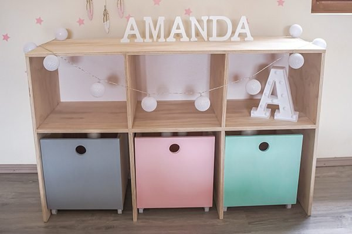
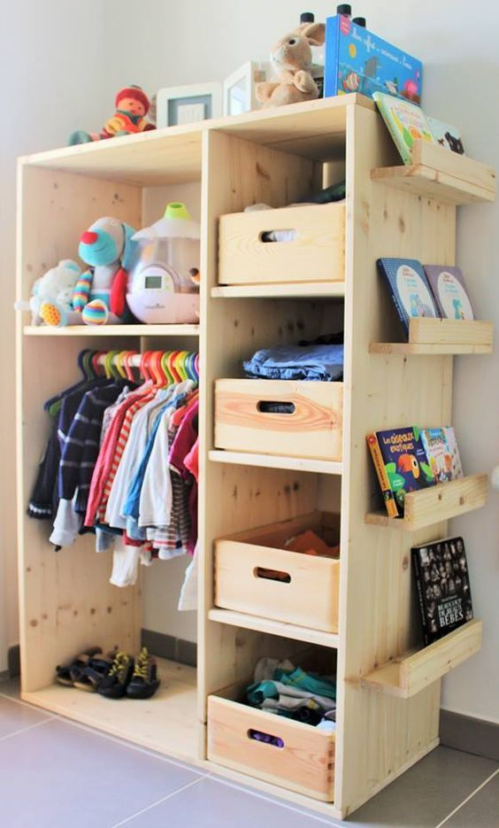
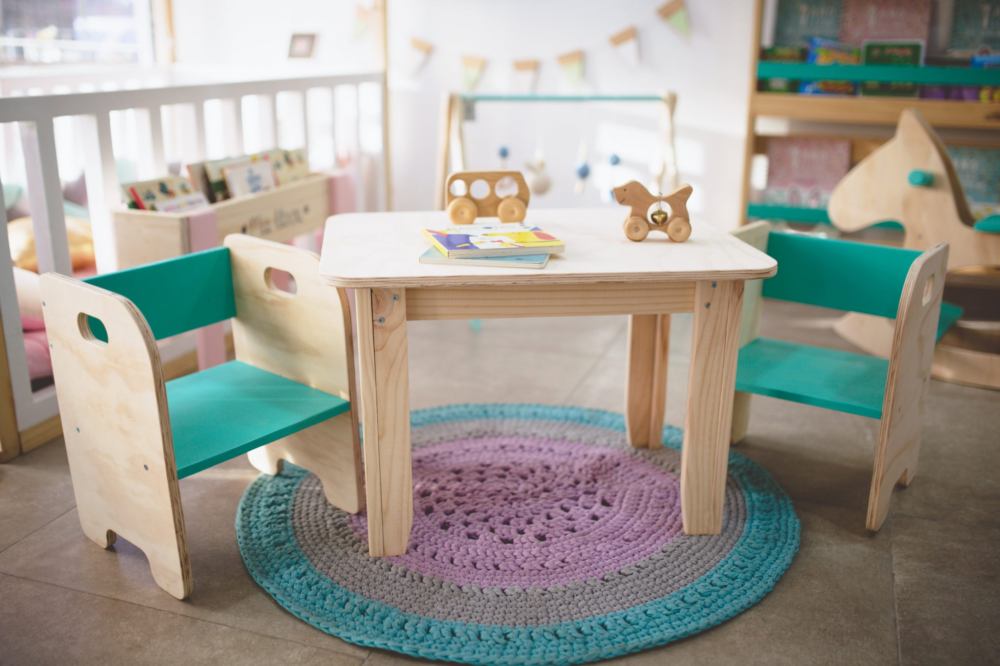

Mobiliario para niños
|  |
Organizador Este encantador organizador está diseñado para niños y cuenta con tres divisiones espaciosas y tres cajones con ruedas. Fabricado con materiales seguros y naturales, fomenta la creatividad y la autonomía de los más pequeños. ¡Ideal para mantener el espacio ordenado y estimular la imaginación! |
|  |
Ropero Este mueble está diseñado para adaptarse a la altura de los niños, facilitando su acceso a la ropa sin necesidad de ayuda. Con la altura adecuada el niño puede ver y elegir su ropa fácilmente, barra de colgar a su nivel. ¡Un ropero Montessori ayuda a que los niños aprendan a cuidar su ropa correctamente y a valorar sus pertenencias! |
|  |
Mesa Este conjunto de mesa mas 2 sillas está diseñado para niños en casa y fomenta la independencia y el aprendizaje autodirigido. La mesa Montessori tiene una superficie de madera terciada. Las sillas ofrecen un diseño seguro y acogedor. Ideal para crear un rincón de juego y aprendizaje para los más pequeños. |